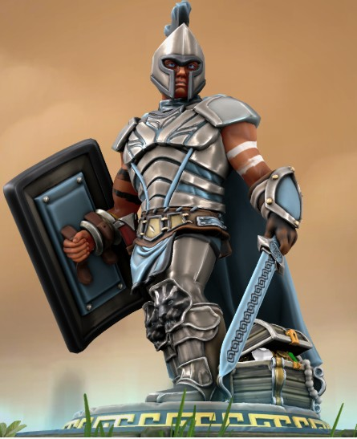

Aasimar | Barbarian (Path of the Zealot) | Chaotic Good

Ikari Tivati was found on the doorstep of the Temple of Selune in Lyrabar as a baby. Being orphaned by parents he never knew caused young Ikar to develop deep-seated anger issues. As a ward of the temple, he studied the holy scriptures of Selune, but as he grew, though small and weak for his age, his interests skewed towards defending the faithful through martial prowess.
Despite his unknown parentage, the temple elders ensured he was trained among the scions of noble houses because of his celestial ancestry. As they did not deem it necessary to explain their reasoning, Ikari became the focus of ridicule and abuse from the noble squires, who saw him as a lesser. His anger at the other squires' treatment led him to lash out, often drawing the ire of his instructors. Who remarked that despite his passion and zeal for the Selunite cause, Ikari lacked the restraint and presence of self to serve in a manner
Following a particularly rough patch, while locked in a cellar by his tormentors, a panicked Ikari sought the guidance of the Moonmaiden. In a vision, he saw Semyaza, an emissary of Selune and one of her trusted Shards. The archangel told him not to despair, for he was born of the light of Our Lady of Silver and that he was a vessel for her radiance in the mortal realm. Semyaza led Ikari in a recitation of the Litany of Selûne and commanded him to open himself to Her power. Coming out of his meditative state, Ikari felt the power of the Moonmaiden flowing through him, her light emanating from his very being. The surge of divine energy blasted the cellar door from its hinges.
Following his escape, the power feeding his anger, Ikari set about seeking revenge upon the squires who tormented him. Fortunately, before he could deal any permanent damage, Ikari was calmed by the words of Bellodar Draust, an unconventional knight-errant attached to the temple. To assuage the bruised egos of the nobleborn, the temple elders decided that Ikari should accompany Sir Bellodar as his squire. Over the next few years, Ikari accompanied Bellodar on his travels, assisting and learning from the knight by day and receiving visions and instructions from Semyaza by night.
Through the tutelage and the unlocked power of his celestial heritage, Ikari grew in both skill and size. When he and Sir Bellodar returned to Lyrabar, at the summons of the (King?), the figure of the knight and his scrawny squire had been reversed with the now hulking Ikari standing nearly a foot above his not short, 6'2", master.
Traits, ideals, bonds, flaws...